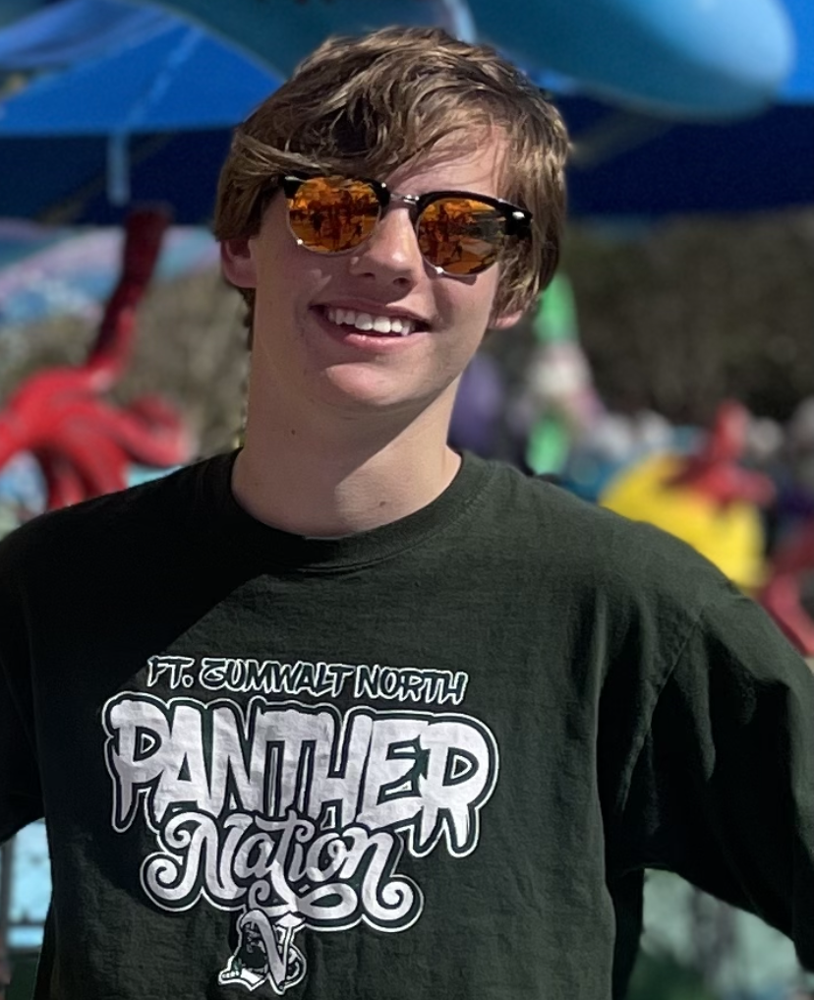

Professional Biography
My name is Tyler Ross. I study computer science at the University of Missouri - Kansas City. I am currently in my third year of school for a major in computer science and a minor in integrated performing arts. My primary skills include Python and C++. I am also familiar with frameworks like VisualStudio and GitHub. I am currently learning HTML/CSS and unity, and I’m studying cybersecurity and algorithms. Projects I am typically drawn to involve the development of video games, or analyses of data. I am interested in work that combines creativity with my technical skills. My main inspirations for work often involve a feeling of fulfillment from my work as well as a competence to it. My career goal includes working in a specific role for a team on a creative project that allows my skills to shine. I am currently open to internship/part-time positions in the greater Kansas City area or greater St. Louis area.
Professional Image
View my professional resume here.
Education Background
I attended Fort Zumwalt North High School and graduated May 2023 with a high school diploma, summa cum laude. Since, I have been studying at the University of Missouri - Kansas City. I am expected to graduate May 2027 with a Bachelor’s Degree in Computer Science.
Relevant Coursework:
- Problem Solving & Programming I
- Discrete Structures I
- Problem Solving & Programming II
- Introduction to Computer Architecture & Organization
- Discrete Structures II
- Data Structures
- Data Communications & Networking
- Introduction to Algorithms & Complexity
- Introduction to Cybersecurity
- Web Development
Contact Me
Email: tdr2n4@umsystem.edu
LinkedIn: https://www.linkedin.com/in/tyler-ross-tdr/
GitHub: https://github.com/tyler-ross26